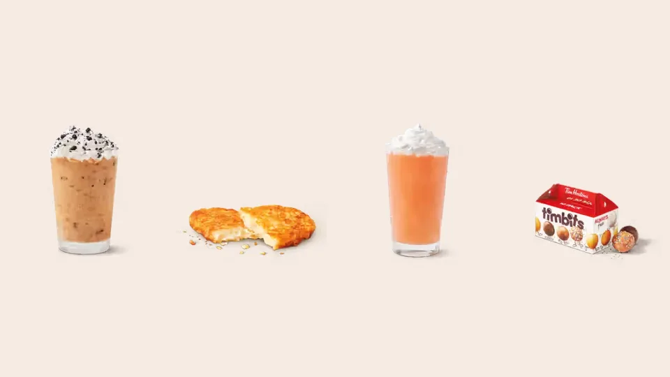

Unofficial fan guide - not affiliated with Tim Hortons
Every new and returning Tim Hortons item in Canada in 2026, newest first, with launch dates.
Full Menu / Blog / Tim Hortons New Menu Items 2026

As of October 2, 2026, Tim Hortons' newest Canadian menu items are the Strawberry Matcha lattes and Strawberry Soda Swirl (September 23), the returning Honey Mustard (September 16) and the White Cheddar Hashbrown (September 1). The Pumpkin Spice lineup and Orange Sprinkle Donut are also back.
The table lists the 2026 launches from Tim Hortons' Canadian press releases, newest first. "New" means the release presents it as a new item, and "Returning" means the release says it is back.
| Date | Item | New or returning |
|---|---|---|
| September 30 | Orange Sprinkle Donut (100% of proceeds to Indigenous organizations) | Returning |
| September 23 | Strawberry Iced Matcha Latte, Hot Strawberry Matcha Latte, Strawberry Soda Swirl | New |
| September 16 | Honey Mustard (limited time) | Returning |
| September 1 | White Cheddar Hashbrown | New |
| September 1 | Pumpkin Spice Latte, Iced Latte, Iced Capp, Cold Brew and Muffin | Returning |
| August 12 | Harry Potter menu: four House donuts, Golden Snitch Caramel Timbits, two Quenchers | New |
| July 22 | Matcha lineup: five hot and iced lattes | New |
| June 18 | Poppin' Frozen Quenchers | New |
| May 27 | Cheese Melts and Bacon Melts | Returning |
| May 27 | Lemon Blueberry Tart, Sausage & Four Cheese Omelette Bites | New |
| April 22 | Tastes of the Globe Timbits (four flavours) | New |
| April 2 | Protein Quenchers, Raspberry Mojito Zero Sugar Sparkling Quencher, Caramel Churro drinks | New |
| March 24 | Ryan's Signature Donut (Maple Butter Glazed) | New |
Drinks have been the busiest category: a spring cold-beverage lineup, a summer frozen drink, a full matcha range and the fall Pumpkin Spice set.
On April 2, 2026, Tim Hortons announced the Raspberry Mojito Zero Sugar Sparkling Quencher, Protein Quenchers and a Caramel Churro lineup. The Protein Quenchers are made with a lactose-free, high-protein dairy beverage and have 14 grams of protein per medium. They come in Blackberry Yuzu, Orange Tangerine, Peach, Strawberry Watermelon and Raspberry Mojito. The Caramel Churro Iced Latte, Cold Brew and Iced Capp are topped with churro cookie crumbs, and the OREO DOUBLE STUF Iced Capp returned the same day. On June 18, Poppin' Frozen Quenchers added popping candies to the Frozen Quencher lineup in five fruit flavours.
Tim Hortons launched its matcha lineup on July 22, 2026: Vanilla Iced Matcha Latte with Cold Foam, Original Iced Matcha Latte, Unsweetened Iced Matcha Latte, Hot Vanilla Matcha Latte and Hot Matcha Latte. It uses 100% pure matcha from shade-grown green tea leaves that are double ground into a fine powder. On September 23, the Strawberry Iced Matcha Latte and Hot Strawberry Matcha Latte joined the range, alongside the Strawberry Soda Swirl, which blends Coca-Cola with strawberry syrup and cream.
The Pumpkin Spice Latte, Iced Latte, Iced Capp and Cold Brew returned on September 1, available until November 1. Our fall menu guide covers the full season, and our Pumpkin Spice page covers calories and prices.
Food additions have centred on sandwiches, wraps, tarts and savoury bites, with a mix of returning favourites and new items.
The $8.99 Loaded Wrap Meal Deal ran from March 9 to April 5, 2026, and included a Loaded Wrap (Cilantro Lime Chicken, Habanero Chicken or Veggie), Potato Wedges or any Classic Donut, and a 500 ml Coca-Cola product. Cheese Melts and Bacon Melts returned on May 27, starting from $5.79 each. The Crispy Chicken Sandwich was featured in the June 18 summer menu, and Honey Mustard returned on September 16 as a sandwich topping and the suggested pairing for the Turkey Bacon Club.
On May 27, Tim Hortons added the Lemon Blueberry Tart, made with real blueberries and lemon filling, and Sausage & Four Cheese Omelette Bites, with 13 grams of protein per serving, priced at two bites for $3.99. The White Cheddar Hashbrown arrived with the fall launch on September 1.
There were four donut and Timbits launches: a celebrity collaboration, a Timbits tasting set, a Harry Potter range and a returning charity donut.
Ryan's Signature Donut, a Maple Butter Glazed Donut developed with Ryan Reynolds, was announced March 20 and launched March 24. On April 22, the Tastes of the Globe Timbits arrived in four limited-time flavours: Canadian Fireworks (a Birthday Cake Timbit with popping candy clusters), Chocolate Crème Brûlée, Lime Cheesecake and Cappuccino. On August 12, the Harry Potter menu brought four Hogwarts House donuts (Gryffindor Strawberry Cheesecake, Slytherin Chocolate Pistachio, Ravenclaw Blueberry and Hufflepuff Lemon Meringue) and Golden Snitch Caramel Timbits. The Orange Sprinkle Donut returned on September 30 for its sixth year, having raised over $5.3 million since 2021.
Several 2026 items already have end dates or limits. The Loaded Wrap Meal Deal ended on April 5. Pumpkin Spice items are available until November 1. The Harry Potter items were available while supplies last, and the Omelette Bites and Honey Mustard are both limited time. Items that have left the menu for good are tracked on our discontinued items page.
In the releases we reviewed, Tim Hortons had not announced its year-end items as of October 2, 2026. Holiday items are the next seasonal window, and our holiday menu page covers what to expect.
As of October 2, 2026, the newest items are the Strawberry Iced Matcha Latte, Hot Strawberry Matcha Latte and Strawberry Soda Swirl from September 23. The White Cheddar Hashbrown and the Pumpkin Spice lineup arrived on September 1.
The fall launches are the Pumpkin Spice drinks and muffin, the White Cheddar Hashbrown, Honey Mustard, the Strawberry Matcha drinks and the Orange Sprinkle Donut. Each has its own date in the table above.
Yes. In 2026, Tim Hortons launched a spring and summer cold-drink lineup on April 2, a summer menu on June 18 and Pumpkin Spice season on September 1.
No. Seasonal items are limited time. The Pumpkin Spice items, for example, are available until November 1, 2026, and the Loaded Wrap Meal Deal ended on April 5.
Prices vary because franchise owners set their own. Published 2026 examples include Sausage & Four Cheese Omelette Bites at two for $3.99 and Melts from $5.79, but most releases do not list prices.
Tim Hortons points to the Tims App and timhortons.ca for details on its promotions. Its Canadian press releases are also public.
Not necessarily. Tim Hortons describes its new items as available at participating restaurants, so stock can differ between locations.
Protein Lattes were announced for U.S. restaurants in January 2026. The Canadian releases we reviewed name Protein Quenchers, not Protein Lattes.
The newest donut is the Orange Sprinkle Donut, which returned on September 30, 2026. The newest donut flavour is Ryan's Signature Donut, a Maple Butter Glazed Donut that launched on March 24.
No. Honey Mustard returned on September 16, 2026, for a limited time, after guests asked for it on social media.
They launched on August 12, 2026, and were available while supplies last. We cannot confirm stock at any particular restaurant, so check before you go.
This is an independent, unofficial guide. It is not affiliated with, endorsed by, or sponsored by Tim Hortons or Restaurant Brands International. New-item dates come from Tim Hortons' 2026 Canadian press releases. Availability varies by restaurant and items are limited time unless stated. See Sources.